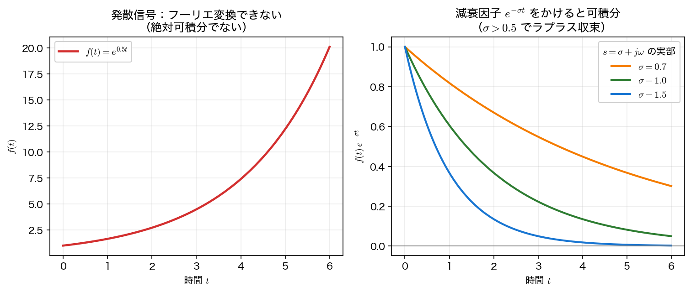

ラプラス変換の定義と収束
フーリエ変換は「定常的に振動する成分」を見る道具だったが、増大する信号や減衰しない信号を扱えなかった。本ページでは、フーリエ変換に 減衰因子 を組み込んで一般化した ラプラス変換 を定義し、その 収束領域 と基本的な変換対・性質を整理する。
フーリエからラプラスへ
フーリエ変換 \(F(\omega)=\int_{-\infty}^{\infty} f(t)e^{-j\omega t}dt\) は、信号が 絶対可積分（\(\int|f|dt<\infty\)）であれば確実に存在する。ところが
- \(f(t)=e^{0.5t}\) のように 増大する信号
- ステップ関数 \(u(t)\) のように 減衰しない信号
はこの十分条件を満たさず、通常の関数の範囲では フーリエ変換が扱いにくい。そこで、積分する前に 減衰因子 \(e^{-\sigma t}\)（\(\sigma>0\)）を掛けて無理やり可積分にする、というのがラプラス変換の発想である。
厳密には十分条件
絶対可積分性はフーリエ変換が存在する 十分条件 であって必要条件ではない。ステップ関数 \(u(t)\) や \(\sin\omega t\) も、\(\delta\) 関数を許す 超関数（distribution） の意味ではフーリエ変換をもつ。ここでは「減衰因子を入れれば無理なく扱える」という発想を導くため、通常の可積分性を出発点にしている。
ここで \(s=\sigma+j\omega\) とまとめれば、（片側）ラプラス変換 の定義が得られる。

なぜ \(t\ge 0\) なのか（片側ラプラス変換）
積分の下限を \(0\) にした \(\int_0^\infty\) を 片側（unilateral）ラプラス変換 と呼ぶ。システム解析では「ある時刻にスイッチを入れる（\(t=0\) で入力が始まる）」状況を扱うことが多く、初期条件 \(f(0)\) を自然に取り込めるこの形が標準である。本講義でもこちらを使う。
なお下限 \(0\) の扱いには \(0^-\) 規約 と \(0^+\) 規約 があり、本講義は \(\int_{0^-}^{\infty}\)（\(t=0\) のインパルスを全重量で含める）を採る。この規約のもとで \(\mathcal L[\delta(t)]=1\) が成り立ち、微分の公式に現れる初期値も \(f(0^-)\)（入力を加える直前の値）と読む。\(0^+\) 規約では \(\delta\) の重みが積分区間から外れてしまい、\(\mathcal L[\delta]=0\) となって表と食い違うので注意する。
収束領域（ROC）
\(\sigma\) を大きくすれば減衰は強まるが、どこまで小さくできるか には限界がある。ラプラス変換が収束する \(s\) の範囲を 収束領域（Region of Convergence, ROC） と呼ぶ。例として \(f(t)=e^{-at}u(t)\) を変換すると、
積分が収束するのは \(\operatorname{Re}(s+a)>0\)、すなわち \(\operatorname{Re}(s)>-a\) のときだけである。これが ROC で、複素平面上では ある縦線より右の半平面 になる。
ROC とフーリエ変換の存在条件
ROC が 虚軸 \(\operatorname{Re}(s)=0\) を含む とき、\(s=j\omega\) を代入したラプラス変換＝フーリエ変換が存在する。\(e^{0.5t}u(t)\) の ROC は \(\operatorname{Re}(s)>0.5\) で虚軸を含まないため、フーリエ変換は存在しない ── 冒頭の図はこの事実を時間領域で見たものである。
基本的な変換対
実用上は、毎回積分するのではなく 変換対の表 を使う。代表的なものを挙げる（すべて \(t\ge0\)、\(u(t)\) は省略）。
| \(f(t)\) | \(F(s)\) | ROC |
|---|---|---|
| \(\delta(t)\) | \(1\) | 全平面 |
| \(u(t)\)（ステップ） | \(\dfrac{1}{s}\) | \(\operatorname{Re}(s)>0\) |
| \(t\) | \(\dfrac{1}{s^2}\) | \(\operatorname{Re}(s)>0\) |
| \(t^n\)（\(n=0,1,2,\dots\)） | \(\dfrac{n!}{s^{n+1}}\) | \(\operatorname{Re}(s)>0\) |
| \(e^{-at}\) | \(\dfrac{1}{s+a}\) | \(\operatorname{Re}(s)>-a\) |
| \(\sin\omega t\) | \(\dfrac{\omega}{s^2+\omega^2}\) | \(\operatorname{Re}(s)>0\) |
| \(\cos\omega t\) | \(\dfrac{s}{s^2+\omega^2}\) | \(\operatorname{Re}(s)>0\) |
| \(e^{-at}\sin\omega t\) | \(\dfrac{\omega}{(s+a)^2+\omega^2}\) | \(\operatorname{Re}(s)>-a\) |
sympy を使えば、これらを記号計算で確認できる。
import sympy as sp
t = sp.symbols("t", positive=True) # 時間は t>=0。s は複素変数なので仮定を付けない
s = sp.symbols("s")
a, w = sp.symbols("a omega", positive=True)
def L(f):
return sp.simplify(sp.laplace_transform(f, t, s, noconds=True))
print("u(t) ->", L(1))
print("t ->", L(t))
print("e^{-at} ->", L(sp.exp(-a*t)))
print("sin(wt) ->", L(sp.sin(w*t)))
print("cos(wt) ->", L(sp.cos(w*t)))
print("e^{-at}sin->", L(sp.exp(-a*t)*sp.sin(w*t)))
u(t) -> 1/s
t -> s**(-2)
e^{-at} -> 1/(a + s)
sin(wt) -> omega/(omega**2 + s**2)
cos(wt) -> s/(omega**2 + s**2)
e^{-at}sin-> omega/(omega**2 + (a + s)**2)
表のとおりの結果が得られる。\(e^{-at}\sin\omega t\) の分母 \((s+a)^2+\omega^2\) は、\(\sin\omega t\) の \(s\) を \(s+a\) に置き換えた形になっている ── これは次の s 推移 の性質である。
性質（公式）
ラプラス変換には、計算を支える重要な性質がいくつもある。とくに最後の 微分の公式 が本講義の主役である。
| 性質 | 時間領域 | s 領域 |
|---|---|---|
| 線形性 | \(a f(t)+b g(t)\) | \(aF(s)+bG(s)\) |
| s 推移（減衰） | \(e^{-at}f(t)\) | \(F(s+a)\) |
| 時間推移（遅延、\(\tau\ge0\)） | \(f(t-\tau)u(t-\tau)\) | \(e^{-\tau s}F(s)\) |
| スケーリング（\(a>0\)） | \(f(at)\) | \(\dfrac{1}{a}F\!\left(\dfrac{s}{a}\right)\) |
| 微分 | \(f'(t)\) | \(sF(s)-f(0)\) |
| 2 階微分 | \(f''(t)\) | \(s^2F(s)-sf(0)-f'(0)\) |
| 積分 | \(\displaystyle\int_0^t f(\tau)d\tau\) | \(\dfrac{F(s)}{s}\) |
この表のうち 時間推移 は \(\tau\ge0\)（未来へずらす向き）でだけ成り立つ。片側変換は \(t<0\) の情報を捨てているので、\(\tau<0\) とすると \(t\in[0,-\tau)\) の値が積分区間から外れてしまい、この形にはならない。スケーリング も \(a>0\) が必要で、\(a<0\) では \(f(at)\) の \(t\ge0\) 側が元の関数の \(t<0\) 側を参照してしまう。
微分の公式 \(\mathcal{L}[f'(t)]=sF(s)-f(0)\) がラプラス変換の威力の源である。時間領域での「微分」という重たい演算が、s 領域では \(s\) を掛けて初期値を引くだけ の代数操作になる。sympy で（記号的な）関数について確かめてみる。
import sympy as sp
t = sp.symbols("t", positive=True)
s = sp.symbols("s")
f = sp.Function("f")
print(sp.laplace_transform(sp.diff(f(t), t), t, s, noconds=True))
まさに \(sF(s)-f(0)\) である。初期値 \(f(0)\) が式に現れるため、初期条件が自動的に組み込まれる。これが、ラプラス変換で微分方程式を初期値ごと解ける理由になる。
微分の公式が成り立つ条件
上の出力は「\(f\) にこの公式が使える形にしておけば」という前提での記号操作である。導出は部分積分 \(\int_0^\infty f'(t)e^{-st}dt=\bigl[f(t)e^{-st}\bigr]_0^\infty+s\int_0^\infty f(t)e^{-st}dt\) なので、実際に必要なのは (i) \(f\) が各有限区間で 絶対連続（\(f'\) が存在して積分できる）、(ii) \(F(s)\) と \(\mathcal L[f']\) がともに存在する、(iii) 境界項が消える、すなわち \(\lim_{t\to\infty}f(t)e^{-st}=0\) の 3 つである。(iii) は ROC の内側（\(\operatorname{Re}(s)\) が十分大きいところ）では自動的に満たされる。本講義で扱う指数関数・三角関数・多項式の組み合わせはすべてこの条件を満たすので、以降は気にせず使ってよい。
sympy で \(s\) に positive=True を付けない
上のコードで \(t\) にだけ positive=True を付け、\(s\) を素の記号にしているのは意図的である。\(s=\sigma+j\omega\) は 複素変数 であり、s = sp.symbols("s", positive=True) としてしまうと \(s\) が正の実数に限定され、その後の計算が壊れる。実際 sp.solve((s+1)*(s+3), s) は、正と仮定した \(s\) では []（解なし）を返し、仮定なしなら正しく [-3, -1] を返す。\(t\) と \(s\) は必ず分けて宣言すること。
まとめ
- ラプラス変換は、フーリエ変換の核 \(e^{-j\omega t}\) を 複素指数 \(e^{-st}\)（\(s=\sigma+j\omega\)） に置き換えた一般化。減衰因子 \(e^{-\sigma t}\) で発散信号も扱える。
- 収束領域（ROC） は変換が収束する \(s\) の範囲。ROC が虚軸を含めばフーリエ変換が存在する。
- 基本変換対は表で覚え、
sympy.laplace_transformで確認できる。 - 性質のなかでも 微分の公式 \(\mathcal{L}[f']=sF(s)-f(0)\) が要。微分が代数演算（\(s\) 倍＋初期値）になることが、微分方程式を解く鍵になる。
次は、s 領域の式を時間領域へ戻す 逆ラプラス変換と s 平面 に進む。